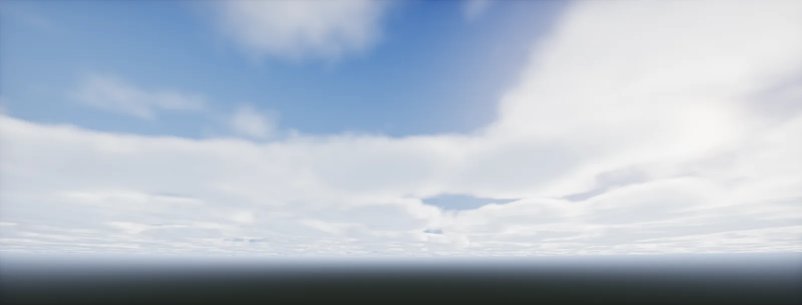

Volumetric Cloud Layer
The second half of a volumetric cloud shader: from where the ray crosses the layer to the colour of the pixel. Steps, density, noise, absorption, light and cost, each as a formula you can move.

Sample positions along the ray
Full-Screen Ray Setup ended with two numbers per pixel: where the view ray enters the cloud layer and where it leaves. A sphere has a formula, so we could solve for the hit exactly. A cloud does not: its density changes everywhere, so there is no equation to solve. Instead the shader : it walks along the ray in steps, looks up the density at each step, and adds up the effect.
With N steps between tenter and texit, each step covers Δ = (texit − tenter) / N, and the sample sits in the middle of its step:
Fixed steps leave visible slices in the clouds, because every pixel samples the same depths. Move the jitter slider: the samples slide inside their steps, by a different random fraction for each pixel and frame.
Height profile
Real cloud layers are thin at the bottom, dense in the middle and wispy at the top. The shader turns the sample's altitude (altitude along the ray) into a position inside the layer, from 0 at the bottom to 1 at the top, and shapes it with two smoothsteps:
Different cloud types are different profiles: low, flat stratus has a short bump near the bottom; towering cumulus fills the whole height. Many systems store a few profiles in a small gradient texture and blend between them with a "cloud type" map.
Cloud shapes from noise
Clouds get their shapes from . One layer of smooth noise gives round blobs. Adding copies at double the frequency and a fraction of the strength adds detail at every scale, the way real clouds have puffs on puffs. Each copy is an octave:
Noise alone covers the whole sky in grey. Coverage decides how much of it becomes cloud: everything below a threshold becomes 0, and the rest is stretched back to 0 to 1. Lower coverage keeps only the peaks of the noise, so clouds become fewer and smaller, not fainter:
In 3D, the noise is stored in small tiling 3D textures (often 128³ for shape and 32³ for erosion detail) because computing several octaves per sample would be far too slow. Density at a sample = coverage(noise) × height profile.
Transmittance
Light passing through a step of density ρ and length Δ is reduced by e−σ·ρ·Δ. Along the ray these factors multiply, so the shader carries one running number, the T, and updates it at every step:
Once T is close to 0, nothing behind can be seen any more, so the loop stops early (typically at T < 0.01). Dense clouds are therefore cheaper than thin haze: the march ends after a few steps.
In-scattered light per sample
A cloud is bright because sunlight scatters inside it toward the camera. At each sample, the shader asks how much sunlight arrives there: it takes a second, short march from the sample toward the sun (often 4 to 6 steps) and computes that path's transmittance Tsun the same way. The light the sample sends to the camera is then:
Each sample's light is added up along the view ray, already multiplied by the T in front of it, so samples deep inside a cloud contribute little. The final pixel is clouds + background · T, the same blend as at the end of Full-Screen Ray Setup.
Phase function
Water droplets scatter most light forward, roughly in the direction it was already travelling. That is why clouds glow at their edges when you look toward the sun: the silver lining. A gives the share of light scattered at each angle θ between the sun's direction and the view direction. The standard one is Henyey–Greenstein, with one number g: 0 scatters evenly, values toward 1 scatter forward:
Clouds use g around 0.6 to 0.8. Many implementations blend two lobes, one forward and one slightly backward, so clouds are not flat when seen with the sun behind you. The 4π makes the function integrate to 1 over all directions: it only redistributes light, it never creates any.
Powder effect
Beer–Lambert alone makes the sun-facing edge of a cloud the brightest part. Real clouds show dark crevices and a darker rim on the sun side, because light has to scatter many times before it comes back out of thin regions. Horizon Zero Dawn's clouds approximated that with one extra factor, the powder term, that darkens samples with little cloud in front of them:
The complete march
Here is the complete march on a 2D slice of a cloud layer, with the sun straight above. Every dot is a sample; its colour is the light it adds. Watch the transmittance fall as the ray enters a cloud and the march stop early inside dense ones.
// the core loop (sketch) float T = 1; float3 L = 0; float dt = (tExit - tEnter) / STEPS; float t = tEnter + dt * jitter; // jitter in [0, 1) per pixel [loop] for (int i = 0; i < STEPS && T > 0.01; i++, t += dt) { float3 p = rayOrigin + rayDir * t; float rho = Density(p); // coverage(noise) * height profile if (rho <= 0) continue; float Tsun = LightMarch(p, sunDir); // short march toward the sun L += T * sigma * rho * dt * Tsun * phase * sunColor; T *= exp(-sigma * rho * dt); } return float4(L, T); // composite: L + background * T
Cost
Clouds are among the most expensive things a frame can contain: every pixel runs N density samples, and each of those runs M more toward the sun. Production systems cut the work three ways: they render at a fraction of the resolution, they spread the samples over several frames and reproject the result (temporal accumulation), and they stop early in dense clouds. The cost model, in samples per frame:
Compare the result with the frame budget in Frame Profiling: a modern GPU handles a few hundred million simple texture samples per millisecond, so an unoptimised full-resolution march can easily take the whole frame.
HDRP ships Volumetric Clouds as a Volume override (Simple, Advanced and Manual modes), with the cloud layer heights, density and erosion noise, and a temporal accumulation factor. Its settings map directly onto the chapters here.
URP has no built-in volumetric clouds. Build them as a Full Screen Pass Renderer Feature or a custom ScriptableRenderPass: render the march at half or quarter resolution into a render texture, reproject with the previous frame, then composite (setting up the pass).
The Volumetric Cloud component renders a layer around the planet defined by the Sky Atmosphere, with a material that returns extinction and albedo per sample. Sample counts and tracing distances are in the component; quality scales with r.VolumetricCloud.* settings.
Build it in Unity HDRP
A complete cloud layer: a compute shader bakes a tiling 3D noise texture once, a Fullscreen Shader Graph marches the layer per pixel with the loop from one ray, all steps together, and a Custom Pass Volume draws it over the sky. It reuses the camera ray and layer interval from Full-Screen Ray Setup. Written for Unity 6 with HDRP 17; Unity 2022 LTS works the same apart from a few renamed menu entries.
- Create the compute shader
CloudNoisefrom the file below. AddCloudSetup.cs(withCameraRayParamsfrom the ray-sphere unit) to the camera and assign the compute shader and your sun light. - Create a Fullscreen Shader Graph. Graph Settings: Blend Mode
Premultiply, so the output is clouds + background × T: Base Color = clouds, Alpha = 1 − T. - Save
CloudLayer.hlsl. In the graph, add a Custom Function node. Set Type toFile, Source toCloudLayer.hlsland Name toCloudLayer(without the_floatsuffix). Add the inputs UV (Vector 2), Coverage (Float), Density (Float), Steps (Float), SunIntensity (Float), Exposure (Float) and the outputs Color (Vector 3), Alpha (Float), in that order and with those types: they must match the function's parameters. - Inputs: Screen Position (Default).xy for UV; Coverage 0.5, Density 0.04 (per metre), Steps 48, SunIntensity in lux (for example 100 000); Exposure from HDRP's Exposure node (Mode
Current Multiplier). HDRP's colour buffer is pre-exposed, so the clouds must be too. - Material from the graph; a Custom Pass Volume (Global,
Before Post Process) with a FullScreen Custom Pass using it. - Cost: the march runs per pixel. Start at 32–48 steps with 4–6 light steps; for production, render at half or quarter resolution in a C# custom pass and reproject over frames (what it costs). HDRP also ships its own Volumetric Clouds override, which is the practical choice when you do not need a custom look.
#ifndef ATLAS_CAMERA_RAY_DECLARED
#define ATLAS_CAMERA_RAY_DECLARED
float3 _CamRight, _CamUp, _CamForward, _CamPosAWS;
float4 _CamLens; // x = tan(fov/2), y = aspect
// Screen UV (0..1, origin bottom-left) to a normalized world-space ray direction.
float3 CameraRay(float2 uv)
{
float2 ndc = uv * 2.0 - 1.0;
float3 dView = float3(ndc.x * _CamLens.x * _CamLens.y, ndc.y * _CamLens.x, 1.0);
return normalize(dView.x * _CamRight + dView.y * _CamUp + dView.z * _CamForward);
}
// Ray from a point at height h above a planet of radius R against the sphere of radius r.
// Planet centre is at (0, -(R + h), 0) in camera-relative space.
float2 RaySphereFromHeight(float3 dir, float R, float h, float r)
{
float b = (R + h) * dir.y;
float c = (R + h) * (R + h) - r * r;
float d = b * b - c;
if (d < 0) return float2(-1, -1);
d = sqrt(d);
return float2(-b - d, -b + d);
}
// Where a ray enters and leaves the layer between R + bottom and R + top (camera below, inside or above).
float2 LayerInterval(float3 dir, float R, float h, float bottom, float top)
{
float2 lo = RaySphereFromHeight(dir, R, h, R + bottom);
float2 hi = RaySphereFromHeight(dir, R, h, R + top);
float t0, t1;
if (h < bottom) { t0 = lo.y; t1 = hi.y; } // below the layer
else if (h < top) { t0 = 0; t1 = (lo.x > 0) ? lo.x : hi.y; } // inside
else { if (hi.x < 0) return float2(-1, -1); t0 = hi.x; t1 = (lo.x > 0) ? lo.x : hi.y; } // above
return float2(max(t0, 0), t1);
}
#endif
#ifndef ATLAS_CLOUD_LAYER_INCLUDED
#define ATLAS_CLOUD_LAYER_INCLUDED
TEXTURE3D(_CloudNoise); SAMPLER(sampler_CloudNoise);
float3 _SunDirection; // toward the sun, set by CloudSetup.cs
float4 _CloudParams; // x planet radius, y bottom, z top, w noise scale (1/m)
float4 _CloudWind; // xyz wind offset in metres (grows with time)
float CloudDensity(float3 pAWS, float altitude, float coverage)
{
float h = saturate((altitude - _CloudParams.y) / (_CloudParams.z - _CloudParams.y));
float profile = smoothstep(0.0, 0.15, h) * (1.0 - smoothstep(0.45, 1.0, h));
float n = SAMPLE_TEXTURE3D_LOD(_CloudNoise, sampler_CloudNoise, (pAWS + _CloudWind.xyz) * _CloudParams.w, 0).r;
return saturate((n * profile - (1.0 - coverage)) / max(coverage, 1e-3));
}
float PhaseHG(float cosT, float g)
{
float g2 = g * g;
return (1.0 - g2) / (4.0 * PI * pow(1.0 + g2 - 2.0 * g * cosT, 1.5));
}
void CloudLayer_float(float2 UV, float Coverage, float Density, float Steps, float SunIntensity, float Exposure,
out float3 Color, out float Alpha)
{
Color = 0; Alpha = 0;
float R = _CloudParams.x, h = _CamPosAWS.y;
float3 dir = CameraRay(UV);
float2 seg = LayerInterval(dir, R, h, _CloudParams.y, _CloudParams.z);
if (seg.y <= seg.x) return;
#ifdef SHADERGRAPH_PREVIEW
float rawDepth = 0;
#else
float rawDepth = SampleCameraDepth(UV); // stop at geometry
#endif
if (rawDepth > 1e-6 && rawDepth < 1.0 - 1e-6)
seg.y = min(seg.y, LinearEyeDepth(rawDepth, _ZBufferParams) / max(dot(dir, _CamForward), 1e-3));
seg.y = min(seg.y, seg.x + 30000.0); // do not march to the horizon forever
if (seg.y <= seg.x) return;
int n = (int)clamp(Steps, 4, 128);
float dt = (seg.y - seg.x) / n;
float jitter = frac(sin(dot(UV, float2(12.9898, 78.233))) * 43758.5453);
float T = 1.0;
float3 L = 0;
float3 sun = normalize(_SunDirection);
float phase = lerp(PhaseHG(dot(dir, sun), 0.6), PhaseHG(dot(dir, sun), -0.2), 0.3);
[loop] for (int i = 0; i < n; i++)
{
float t = seg.x + (i + jitter) * dt;
float3 pRel = dir * t; // camera-relative
float altitude = length(pRel + float3(0, R + h, 0)) - R;
float d = CloudDensity(pRel + _CamPosAWS, altitude, Coverage);
if (d <= 0.001) continue;
// light march toward the sun
float od = 0;
[unroll] for (int j = 1; j <= 5; j++)
{
float3 q = pRel + sun * (j * 120.0);
float aq = length(q + float3(0, R + h, 0)) - R;
od += CloudDensity(q + _CamPosAWS, aq, Coverage) * 120.0;
}
float Tsun = exp(-od * Density);
float powder = 1.0 - exp(-2.0 * d * Density * dt);
float sigma = d * Density;
float3 lit = SunIntensity * (Tsun * phase * 2.0 * powder + 0.04); // + a little sky light
L += T * sigma * dt * lit;
T *= exp(-sigma * dt);
if (T < 0.02) break;
}
Color = L * Exposure; // HDRP colour is pre-exposed
Alpha = 1.0 - T;
}
#endif#pragma kernel Bake
RWTexture3D<float> _Noise;
uint _Size; // texels per side, e.g. 128
uint _Period; // noise cells per side at the lowest octave; makes it tile
float Hash3(uint3 c)
{
c = c * uint3(1597334673u, 3812015801u, 2798796415u);
uint n = (c.x ^ c.y ^ c.z) * 1597334673u;
return (n >> 8) * (1.0 / 16777216.0);
}
float ValueNoise(float3 p, uint period)
{
uint3 i = (uint3)floor(p);
float3 f = frac(p);
f = f * f * (3.0 - 2.0 * f);
float r = 0;
[unroll] for (uint k = 0; k < 8; k++)
{
uint3 o = uint3(k & 1, (k >> 1) & 1, k >> 2);
float3 w = lerp(1.0 - f, f, (float3)o);
r += Hash3((i + o) % period) * w.x * w.y * w.z; // modulo the period: tiles seamlessly
}
return r;
}
[numthreads(4, 4, 4)]
void Bake(uint3 id : SV_DispatchThreadID)
{
if (any(id >= _Size)) return;
float3 p = (id + 0.5) / _Size;
float n = 0, amp = 0.5, norm = 0;
uint period = _Period;
for (int o = 0; o < 5; o++)
{
n += amp * ValueNoise(p * period, period);
norm += amp; amp *= 0.5; period *= 2;
}
_Noise[id] = n / norm;
}using UnityEngine;
using UnityEngine.Rendering;
// Bakes the 3D cloud noise once and sends the cloud and sun settings to all shaders.
[ExecuteAlways]
public class CloudSetup : MonoBehaviour
{
public ComputeShader noiseShader;
public Light sun;
public int noiseSize = 128;
public float planetRadius = 6371000f;
public float bottom = 1500f, top = 2500f;
public float noiseTileMetres = 12000f; // one tile of noise covers this many metres
public Vector3 windMetresPerSecond = new Vector3(15f, 0f, 5f);
RenderTexture noise;
static readonly int NoiseId = Shader.PropertyToID("_CloudNoise");
static readonly int ParamsId = Shader.PropertyToID("_CloudParams");
static readonly int WindId = Shader.PropertyToID("_CloudWind");
static readonly int SunId = Shader.PropertyToID("_SunDirection");
void OnEnable() => Bake();
void Bake()
{
if (noiseShader == null || !SystemInfo.supportsComputeShaders) return;
noise = new RenderTexture(noiseSize, noiseSize, 0, RenderTextureFormat.RHalf)
{
dimension = TextureDimension.Tex3D,
volumeDepth = noiseSize,
enableRandomWrite = true,
wrapMode = TextureWrapMode.Repeat,
filterMode = FilterMode.Bilinear,
name = "CloudNoise3D"
};
noise.Create();
int k = noiseShader.FindKernel("Bake");
noiseShader.SetTexture(k, "_Noise", noise);
noiseShader.SetInt("_Size", noiseSize);
noiseShader.SetInt("_Period", 4);
int g = Mathf.CeilToInt(noiseSize / 4f);
noiseShader.Dispatch(k, g, g, g);
Shader.SetGlobalTexture(NoiseId, noise);
}
void Update()
{
Shader.SetGlobalVector(ParamsId, new Vector4(planetRadius, bottom, top, 1f / noiseTileMetres));
float time = Application.isPlaying ? Time.time : 0f;
Shader.SetGlobalVector(WindId, windMetresPerSecond * time);
if (sun != null) Shader.SetGlobalVector(SunId, -sun.transform.forward);
}
void OnDisable()
{
if (noise != null) { noise.Release(); DestroyImmediate(noise); noise = null; }
}
}The shader uses _CamPosAWS.y as the camera's height above the planet surface, so put the ground at y = 0. Noise at one octave is soft; real productions add a second, detail noise that erodes the edges, and a weather map that sets coverage per region.
Same HLSL with SampleSceneDepth instead of SampleCameraDepth (and Depth Texture enabled), drawn by the Full Screen Pass Renderer Feature. URP has no pre-exposed colour buffer, so pass 1 for Exposure and scale SunIntensity down to a value around 1–5.
Unreal's Volumetric Cloud component runs a material (Material Domain: Volume) per sample, so your density function goes into that material; the marching, lighting and reprojection are done by the engine. For a fully custom march, use a post-process material with a Custom node.
Sources and further reading
The formulas and engine details in this unit come from these references. Engine documentation changes between versions.
- TalkThe real-time volumetric cloudscapes of Horizon Zero DawnAndrew Schneider · SIGGRAPH 2015Height profiles, noise erosion, the powder term and temporal reprojection.
- PaperA Scalable and Production Ready Sky and Atmosphere Rendering TechniqueSébastien Hillaire · EGSR 2020Transmittance and multiple scattering around a planet.
- BookPhase FunctionsPharr, Jakob, Humphreys · PBR bookHenyey–Greenstein derived and normalised.
- ArticlefBMInigo QuilezWhy octaves look natural and how persistence changes the result.
- TutorialThe Book of Shaders: Noise and Fractal Brownian MotionPatricio Gonzalez Vivo, Jen LoweInteractive fbm in a shader.